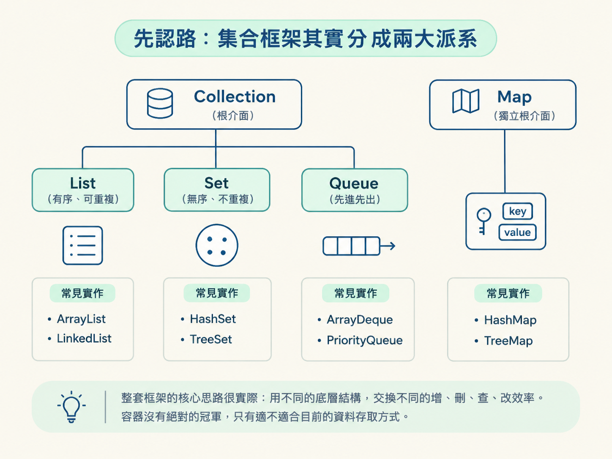
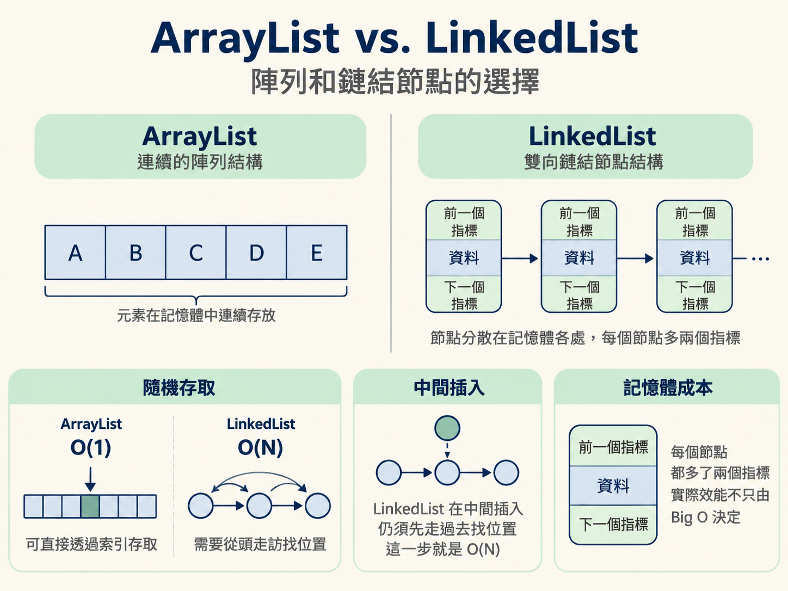
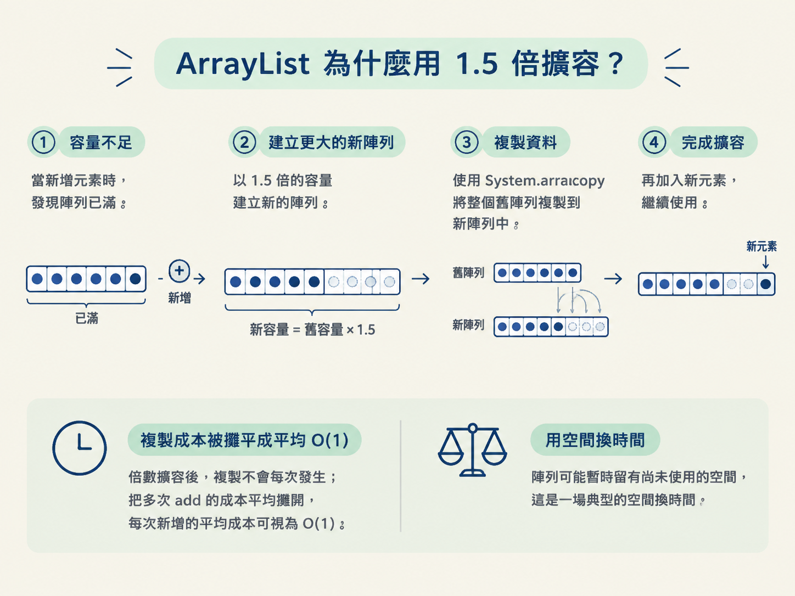
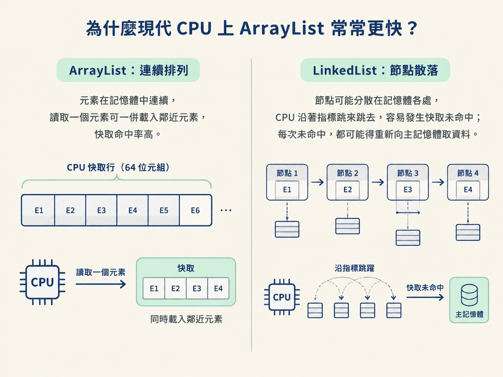
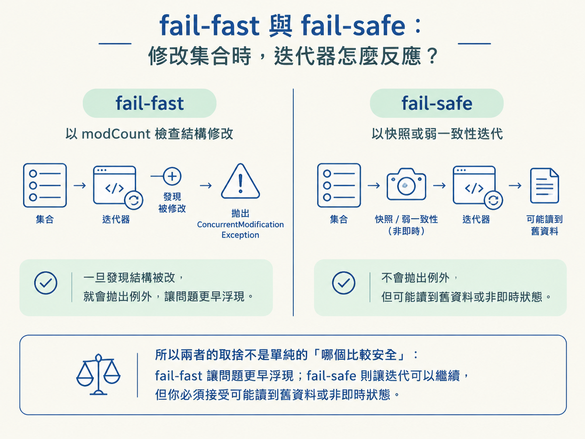

Java 集合框架的頂端不是一整棵樹，而是兩條各自發展的路線。
第一條是 Collection，往下分成 List、Set、Queue：List 保留順序、允許重複；Set 不允許重複；Queue 則用來處理佇列或優先權。第二條是 Map，專門存放鍵值對。
關鍵在這裡：Map 並不繼承 Collection，而是獨立的根介面。面試問「Map 是不是 Collection」時，答錯通常不是不會用，而是集合地圖還沒畫清楚。
| 介面 | 特性 | 常見實作 |
|---|---|---|
| List | 有序、可重複、可依索引存取 | ArrayList、LinkedList、CopyOnWriteArrayList |
| Set | 不可重複，HashSet 無序、TreeSet 有序 | HashSet、LinkedHashSet、TreeSet |
| Queue | 先進先出或依優先權排序 | ArrayDeque、PriorityQueue、ArrayBlockingQueue |
| Map | 鍵值對，鍵不可重複 | HashMap、TreeMap、ConcurrentHashMap |
另外，Collections 是工具類別，提供排序、反轉等靜態方法；Collection 則是介面，兩者只是名字很像。Iterator 是走訪集合的標準方式。
整套框架的核心思路很實際：用不同的底層結構，交換不同的增、刪、查、改效率。容器沒有絕對的冠軍，只有適不適合目前的資料存取方式。

ArrayList 底層是一個會自動長大的陣列，元素在記憶體中連續排列；LinkedList 則是雙向鏈結串列，每個節點都記著前後鄰居的位址。
| 操作 | ArrayList | LinkedList |
|---|---|---|
| 依索引隨機存取 | O(1)，直接計算位址 | O(N)，必須沿著節點逐個尋找 |
| 中間插入或刪除 | O(N)，要搬移後續元素 | O(1) 修改指標，但仍要先用 O(N) 找到位置 |
| 記憶體 | 連續、較精簡 | 每個節點多存前後指標，較佔空間 |
課本常把結論濃縮成「LinkedList 插入、刪除比較快」，但這句話少了一個重要前提：你必須已經找到要操作的節點。
如果要在中間插入，LinkedList 還是得先走過去找位置，這一步就是 O(N)。此外，每個節點都多了兩個指標，節點也分散在記憶體各處，實際效能不只由 Big O 決定。

ArrayList 採用懶加載：建立物件時不急著配置完整陣列，第一次 add 時才把容量開到 10。當元素數量超過目前容量，就會把容量擴成舊容量的 1.5 倍：
// 擴容公式
int newCapacity = oldCapacity + (oldCapacity >> 1);
// 1.8 的實際流程大致是
elementData = Arrays.copyOf(elementData, newCapacity); // 底層走 System.arraycopy擴容時必須複製整個陣列，所以這一次操作是 O(N)。那為什麼不每次只增加一格？因為每次新增都可能觸發複製，總成本會累積成 1+2+3+...+N，最後變成 O(N²)。
改用倍數擴容後，複製不會每次發生；把多次 add 的成本平均攤開，每次新增的平均成本可視為 O(1)。代價則是陣列可能暫時留有尚未使用的空間，這是一場典型的空間換時間。

如果事先知道大概要放多少元素，可以直接使用 new ArrayList<>(n) 指定初始容量，一次避開前幾次擴容與陣列複製。
只看 Big O，很容易以為 LinkedList 在插刪時一定勝出；但現代 CPU 還有一張看不見的牌：快取。
CPU 從記憶體取資料時，通常不是只拿一個位元組，而是一次載入一整條快取行（cache line），常見大小是 64 位元組。ArrayList 的元素連續放在記憶體裡，讀到其中一個元素時，後面幾個元素很可能也已經一併載入快取，這叫做空間局部性。
LinkedList 的節點則可能散落在記憶體各處。CPU 沿著指標跳來跳去，容易發生快取未命中；每次未命中，都可能得重新向主記憶體取資料。

因此會出現一個看似矛盾、其實很常見的結果：理論上 LinkedList 的某些插刪操作是 O(1)，實際走訪或處理中小型資料時，卻常常輸給連續配置的 ArrayList。資料結構的理論成本，還得和記憶體佈局一起看。
CopyOnWriteArrayList 用「讀多寫少」的策略處理併發。讀取不加鎖；寫入時，例如 add、set，會先取得鎖，複製一份新的底層陣列，在新陣列上完成修改，最後再把引用切換過去。
這樣一來，迭代器拿到的是舊陣列的快照。迭代期間即使有其他執行緒寫入，也不會看到新資料，也不會因為集合被修改而拋出併發修改例外；這種行為就是它的弱一致性特徵之一。
List<String> handlers = new CopyOnWriteArrayList<>();
handlers.add("A");
for (String h : handlers) {
handlers.add("B"); // 不會拋 ConcurrentModificationException
}白名單、事件監聽器清單這類「讀很多、改很少」的資料，適合使用它。反過來，如果寫入頻繁，每次寫入都要複製整個陣列，記憶體配置與 GC 壓力會很可觀，就不適合使用。
如果集合正在被迭代，另一邊又修改了它，可能出現兩種行為。
ArrayList、HashMap 這類集合通常是 fail-fast。集合內部用 modCount 記錄結構修改次數，迭代器每次取元素時都檢查這個數值。如果發現集合被偷偷改過，立即拋出 ConcurrentModificationException。
它的態度很直接：寧可立刻報錯，也不要讓程式繼續使用可能不一致的迭代狀態。不過，fail-fast 主要是偵測錯誤的機制，不是完整的併發安全保證。
CopyOnWriteArrayList、ConcurrentHashMap 則常被歸類為 fail-safe。前者基於快照迭代；後者提供弱一致性的迭代，可能看見部分更新、也可能看不到剛發生的更新，但不會因一般的併發修改而拋出例外。
所以兩者的取捨不是單純的「哪個比較安全」：fail-fast 讓問題更早浮現；fail-safe 則讓迭代可以繼續，但你必須接受可能讀到舊資料或非即時狀態。

先記住兩條主線：Collection 與 Map；Map 不繼承 Collection。
選 List 時，不要只背「ArrayList 查得快、LinkedList 插刪快」的口訣，還要看資料的存取模式、尋找位置的成本，以及記憶體佈局。ArrayList 透過 1.5 倍擴容，把反覆複製的 O(N²) 成本攤平成平均 O(1)；CPU 快取則讓連續記憶體在實務上常常勝出。
遇到併發迭代時，再分清楚需求：是要 fail-fast，讓錯誤盡早被發現；還是接受 fail-safe 的弱一致性，換取讀取不中斷。